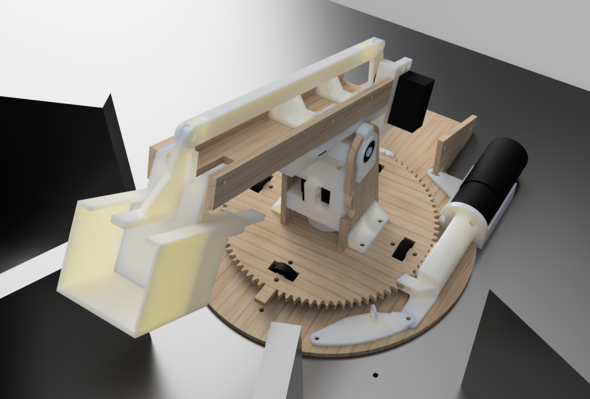
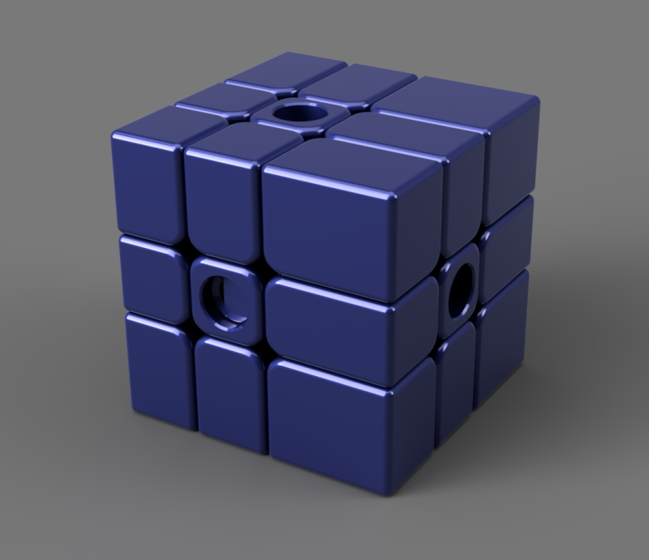
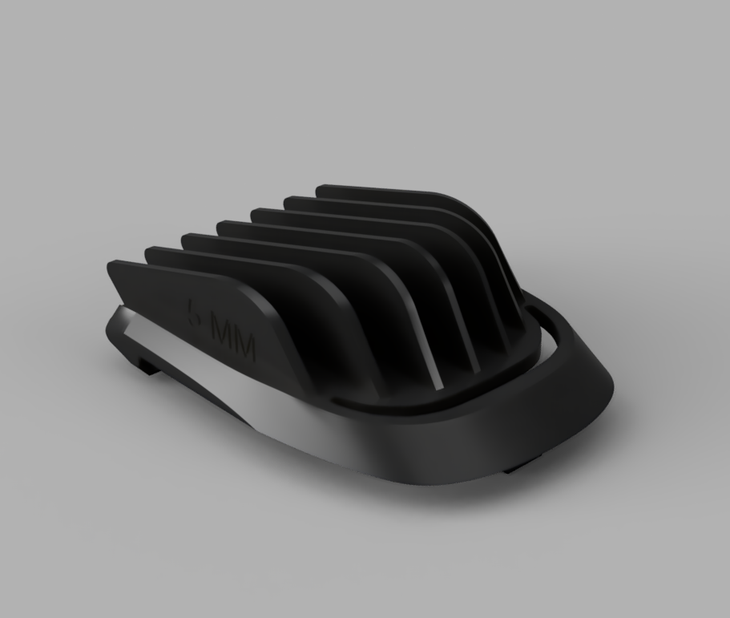

Crane
I have quite some experience in cad design, using sketchup when I was little, and mostly using Fusion 360 now. This comes handy in 3d printing projects, and projects for school, like this crane I designed for a project. Because of covid we didn't get to make a physical version of it, but I'm confident it would have functioned well.
Complex mechanisms are lots of fun to design, and iterate on. This fully 3d printed rubiks cube works very well when printed, and has some decent corner cutting and stability.
3D printing
Design skills come in handy in everyday life too. One such example is this trimmer limit comb, of which I lost some sizes. After bit of modeling they were easily replaced. With a little 3D printer experience, you can also optimise your model and for example, hand-model supports as done in this example to get even better results.
